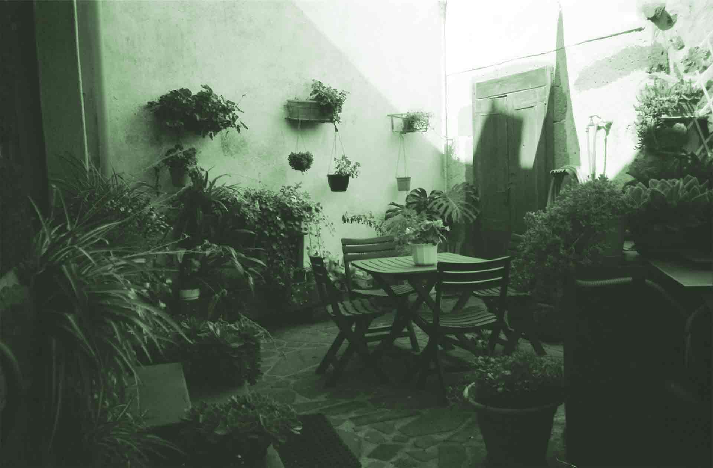

LIA is a biannual artist-in-residence program set in Sedilo, Sardinia. With a focus on moving-image and sound, the program invites artists to experiment within the local environment and community in the development of their artistic practice and projects. Culminating in a public performance, workshop, or piece of work, the program will create opportunities for radical conversations, new collaborations, and informal exchanges.
LIA è un progetto di residenze d’artista con base a Sedilo, nel centro Sardegna. Ideato per il cinema sperimentale e le arti sonore, il programma invita lз artistз a sperimentare nella loro ricerca artistica a contatto con l’ambiente e la comunità locali. Grazie a incontri pubblici e laboratori, il programma creerà nuove opportunità per la nascita di nuove collaborazioni, conversazioni radicali e scambi informali.
liaresidency@gmail.com
